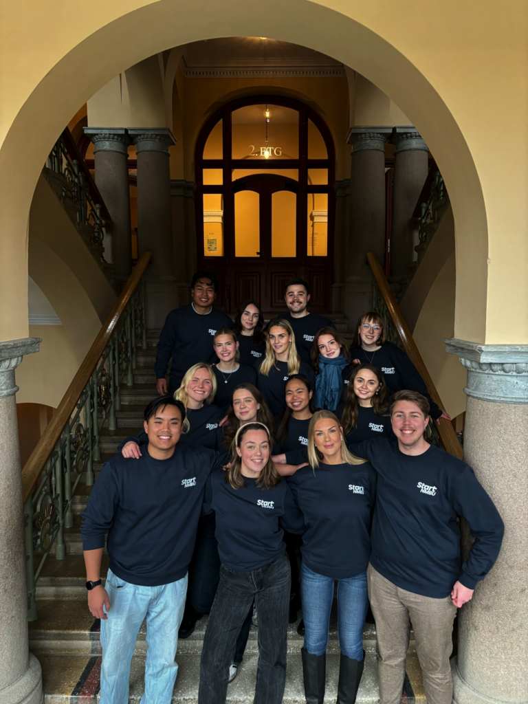
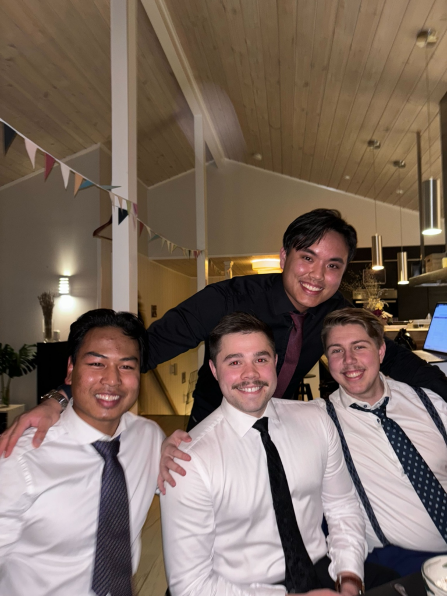
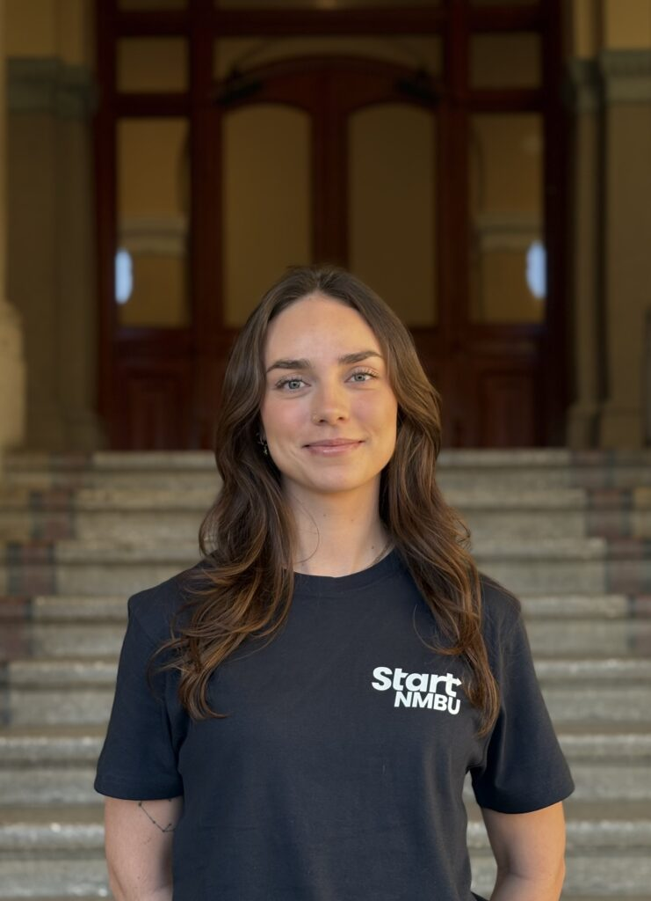

Start Social er gruppen som sørger for at Start NMBU er et sted du kan trives. Vi skaper møteplasser og sosiale aktiviteter som samler medlemmer på tvers av linjer og prosjektgrupper.

Bygge et sterkt fellesskap
Vi vil bygge en inkluderende kultur der alle føler seg sett og har det gøy. Gjennom små og store sosiale arrangementer legger vi til rette for vennskap, samarbeid og et sterkt fellesskap.
Skaper møteplasser
- Spillkvelder, quiz og sosiale samlinger.
- Hytteturer og reiser.
- Årlig julebord.
- Lavterskel arrangementer mellom prosjekter.
- Samarbeid med andre grupper for å styrke samholdet.


Elin Høili
Prosjektleder
Form kulturen i foreningen
Er du glad i å planlegge sosiale arrangementer, møte nye mennesker og skape god stemning? Da passer du perfekt i Start Social.
Her får du muligheten til å forme kulturen i foreningen og bidra til et miljø der alle trives.